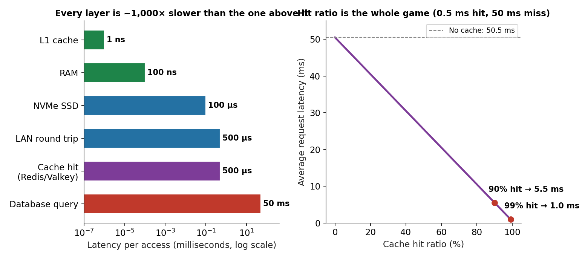
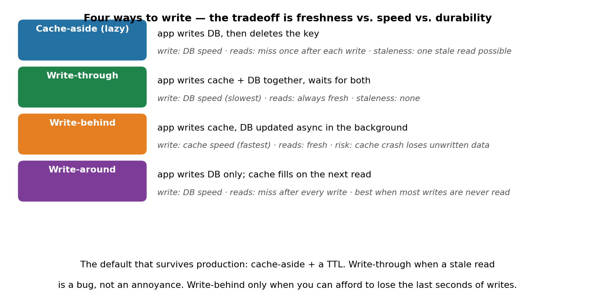
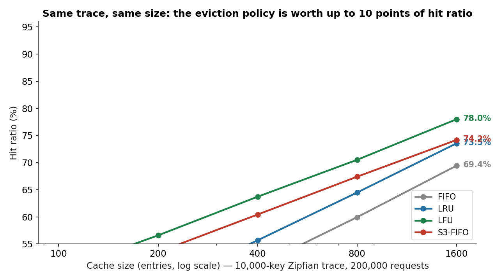
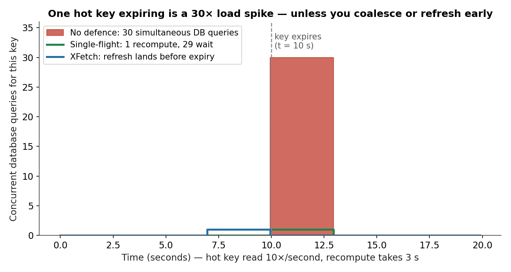

Every request your system serves is a race against a ladder. Your CPU's L1 cache answers in about 1 nanosecond. RAM takes ~100 nanoseconds. An NVMe SSD takes ~100 microseconds. A round trip across the local network takes ~500 microseconds. A database query takes 5 to 50 milliseconds. Each layer is roughly a thousand times slower than the one above it — and a cache is the act of answering from a higher rung than the question deserves. Get the hit ratio from 90% to 99% and the average request gets 5.5× faster, from 5.5 ms to 1.0 ms. That is the whole game: a cache is not a performance optimization, it is a decision about which rung of the ladder your users live on.
This is Part 2 of System Design, Plainly: one concept per post, evergreen, beginner-friendly, with the concrete numbers and the failure modes. Today: caching — what it is, the four layers that matter, why the eviction policy is worth real money, and the stampede that takes down systems that did everything else right.
The ELI5 version
Imagine a library. You need a book. The book you want is either on your desk (instant), on the shelf next to your desk (a few seconds), in the library's stacks (a few minutes), or in a warehouse across town (an hour). A cache is the desk and the shelf: you keep the books you actually use close, and you accept that the desk only holds ten books.
The librarian's job has three parts, and each one is a design decision. What goes on the desk — when you fetch a book from the warehouse, do you put a copy on the desk for next time? What leaves the desk when it is full and a new book arrives — the one you haven't touched in longest, or the one you touch least often? And what happens when the book changes — someone edits a chapter in the warehouse, and your desk copy is now wrong. The first question is the read pattern, the second is the eviction policy, the third is invalidation — and invalidation is the one with the famous warning: "There are only two hard things in computer science: cache invalidation and naming things." (Phil Karlton.)
The numbers make the stakes obvious. A cache hit from an in-memory store like Redis or Valkey costs about 0.5 ms. A database query costs about 50 ms. The average latency of a request is hit_ratio × 0.5 ms + (1 − hit_ratio) × 50.5 ms — a miss pays for the cache check and the database trip. At 90% hits the average is 5.5 ms. At 99% it is 1.0 ms. At 99.9% it is 0.55 ms. Nine points of hit ratio buys a 5.5× speedup, and the last 0.9 points buys another ~2×. That is why the eviction policy — the librarian's second decision — is not an implementation detail. On one simulated Zipfian trace, the wrong policy at the same cache size costs 13 points of hit ratio. At 10,000 requests a second, that is 1,300 extra database queries a second, for free, forever.

How it works: four layers, then the eviction ladder
A request crosses up to four caches before it reaches the database, and each layer only knows what it needs to.
The browser cache is the closest one to the user and the cheapest to run — it costs you nothing, because it is the user's disk. Cache-Control headers tell the browser how long to keep a static asset; a hashed filename (app.9f3c2a.js) makes the cache entry immutable, so a new deploy is a new filename and there is never a stale read. This layer absorbs the majority of repeat traffic for static content and you do not operate it at all.
The CDN edge cache is the same idea at planetary scale: the response is stored in a point of presence a few milliseconds from the user instead of in your origin data center. A cache hit at the edge never touches your infrastructure. This is the layer that absorbs product launches and breaking-news spikes — and the one whose miss rate you watch during an incident, because a cold edge cache is a traffic spike aimed at your origin.
The application cache is the one you operate: an in-memory store — Redis, its fork Valkey, Memcached, Dragonfly, or a local in-process cache like Caffeine — sitting between your application servers and the database. It holds the computed answers: a user profile, a product page, a feed, a session. A hit is ~0.5 ms; a miss is a database query plus the work of filling the cache. This is the layer the rest of this post is about.
The database's own cache is the last line: the buffer pool, the query-result cache, the operating system's page cache. You rarely tune it directly, but it is why the first query after a restart is slow and the second is fast, and why a database that fits in RAM behaves like a different machine from one that does not.
The read pattern: cache-aside is the default for a reason
On a read, the application checks the cache first. Hit: return it. Miss: read the database, store the answer in the cache, return it. That is cache-aside (lazy loading), and it is the default in most systems because it only caches what is actually requested — the cache fills itself with the working set and nothing else. The alternative, read-through, moves the same logic into the cache layer itself, so the application never sees a miss; same behavior, cleaner application code, and it is what managed caches offer as a feature.
The write pattern: freshness vs. speed vs. durability
Writes are where the tradeoffs live, and there are four patterns. Cache-aside (write to the database, then delete the key) is the default that survives production: the next read misses once and refills. Write-through (write to the cache and the database together, wait for both) means reads are never stale — but every write pays full database latency. Write-behind (write to the cache, flush to the database asynchronously) makes writes cache-fast, at the price that a crash before the flush loses data. Write-around (write to the database only; the cache fills on the next read) is right when most writes are never read again — a write-heavy log, say — and wasteful otherwise.
Our notebook runs the arithmetic on a read-heavy workload, 100 reads per write: cache-aside and write-through cost exactly the same in total, 100.0 ms per 100 reads plus one write either way. The latency difference is a rounding error. The real difference is the staleness window: cache-aside has one — the gap between the database write and the key delete, during which a concurrent reader gets the old value. Write-through has none. So the choice is not about speed. It is about whether a stale read is an annoyance or a bug. If it is a bug — a balance, a permission, a price — pay for write-through. If it is an annoyance — a display name, a feed ordering — take cache-aside and its simplicity.

The eviction ladder
Memory is finite. When the cache is full and a new item arrives, something must leave — and that choice can swing your hit ratio by double digits. The policies form a ladder, and each rung fixes the failure of the one below it.
- FIFO — evict the oldest insertion. Nearly free, completely blind: it evicts the item that arrived first whether or not anyone still wants it. On our simulated trace (10,000 keys, Zipfian popularity, 200,000 requests, cache size 400) it manages 50.9%.
- LRU — evict the item untouched for longest. The textbook default, and the right answer for maybe half of real workloads: it adapts to shifting popularity, and a hash map plus a doubly-linked list makes every operation O(1). Same trace, same size: 55.7%. But it has a known failure — scan resistance: one big sequential read (a backup, a full-table scan, a crawler) walks through the whole cache and flushes everything useful, because every scanned item looks "recently used" for exactly one moment.
- LFU — evict the item with the fewest hits. It keeps long-term favourites and laughs at scans, since a scanned item has a count of 1. On our trace it wins outright: 63.7%. Its failure is the mirror image of LRU's: popularity that shifts — yesterday's celebrity is today's nobody — leaves LFU clinging to stale counts until they decay. Production LFU always adds aging or decay (Redis's LFU decays counts on a timer for exactly this reason).
- S3-FIFO / SIEVE / TinyLFU — the modern rung, and the interesting one. The insight, from the S3-FIFO paper (Yang & Yue, SOSP 2023), is that a large fraction of objects in production cache traces are one-hit wonders: requested once and never reused while resident. LRU wastes its bookkeeping promoting those; S3-FIFO filters them first. Three FIFO queues: a small probationary queue (~10% of capacity) that admits everything and evicts the un-reused in one pass; a main queue (~90%) that protects anything that proves itself by being hit twice; and a ghost queue that remembers only the keys of evicted items, so a re-requested key re-enters the main queue directly. No linked-list touch on a hit, no per-item frequency counters — just three FIFO queues and a bit of metadata. Across 6,594 traces from 14 datasets it achieved a lower miss ratio than each of 12 state-of-the-art algorithms in the comparison, cutting LRU's miss ratio by up to 72% on some traces, and matched LRU's hit ratio with roughly 46% less memory. It is now in production at Google, VMware, and Redpanda. SIEVE (NSDI 2024) distills the same idea to one FIFO queue, one visited bit per object, and a moving hand — and cut ARC's miss ratio by up to 63.2% on skewed web workloads. TinyLFU (2017), the admission policy inside Caffeine and Ristretto, takes the other route: a small Count-Min Sketch estimates each key's frequency before it enters the cache, and rejects the one-hit wonders at the door.
Our own simulation tells the honest version of the same story. On a stable-popularity Zipfian trace at cache size 400, S3-FIFO scores 60.4% — 4.8 points above LRU's 55.7%, and still 3.3 points below LFU's 63.7%, because LFU is near-optimal when popularity never shifts. That is the correct reading: the modern policies do not beat LFU on a friendly trace. They beat LRU and LFU on hostile ones — scans, churn, one-hit wonders — which is what production traffic actually is. The 5–15 point gap between the right policy and LRU is the difference between a database that idles and one that melts, and it costs nothing but the choice.

The state of the art: what changed in 2025–2026
Three shifts, in order of importance.
1. The eviction research went mainstream. S3-FIFO and SIEVE were 2023–24 papers; by 2026 they are the default answer to "which eviction policy?" in the same way LRU was for the previous twenty years. The reason is not the hit-ratio charts — it is the throughput: no linked-list touch on a hit means no cache-line bouncing between cores, so the same cache serves more requests per second on many-core machines. And the lesson has crossed into LLM serving: a 2026 study of KV-cache eviction (WAKMan) found no single policy wins across traffic mixes — LRU beat S3-FIFO by 12% on agentic-heavy traffic and trailed it by up to 22% on other mixes — and a workload-aware selector that switches policies on live traffic improved hit rate by ~5 points over LRU on average. The policy is becoming adaptive, not fixed.
2. The in-memory store split in two, and the fork is winning on speed. Redis changed its license in 2024; the community fork Valkey is now the default in-memory store for new projects at most cloud providers. The numbers, from Percona's 2025 benchmarks and independent runs: Valkey 8.1 (April 2025) serves ~1.20M ops/s against Redis OSS 7.4's ~1.11M on the same AWS hardware — an 8% edge — with p99 latency 1.8 ms against 2.3 ms and ~20% less memory from a redesigned hash table. Valkey 9.1 (May 2026) is the current stable line, and Redis 8.x has answered with its own work — native vector sets, per-field hash TTL, AGPLv3 as a third license option — so the gap is narrow and both are healthy. The practical takeaway is not which one is 8% faster. It is that the choice of store is now a real decision again, and that the multi-threaded I/O path Valkey built (parallel command execution on non-overlapping keyspaces) is where the next throughput gains live.
3. The TTL got smarter. A fixed TTL is a cliff: every copy of a value expires at the same instant, and the traffic that was spread across a minute of cache hits lands on the database in one second. The defences are old but underused, and they stack: TTL jitter (a random ±10% on each expiry, so expirations spread out), stale-while-revalidate (RFC 5861: serve the expired value immediately and refresh it in the background, so no user ever waits for a recompute), request coalescing (Go's singleflight, Caffeine's LoadingCache: if a load for a key is already in flight, wait for it instead of starting another), and probabilistic early expiration — XFetch, from Vattani, Chierichetti & Lowenstein (VLDB 2015), which refreshes a value before it expires with a probability that rises as expiry approaches, scaled by how long the recompute takes. The paper proves the expected stampede size stays below a constant that does not depend on the request rate. Our simulation replays the paper's own example: a key read 10 times a second, 3 seconds to recompute, expiring at t = 10 s — with no defence, 30 simultaneous database queries; with single-flight, 1; with XFetch, the refresh lands before expiry and the stampede never happens. Over ten simulated minutes, XFetch performed 11 refreshes with at most 1 recompute in flight — against 300 database queries for a hard TTL with no defence.

Why it breaks
Every caching outage is one of these six:
- The stampede. A hot key expires and every request that depended on it misses at once. The recompute is expensive, the database slows, the miss window widens, more requests pile in — a feedback loop. Fix it with single-flight first (cheapest), TTL jitter second (free), stale-while-revalidate third (best user experience), XFetch when the recompute is so expensive that even the coalescing overlap hurts.
- Stale data served as truth. Cache-aside's delete-after-write has a race: a read that starts before the delete and finishes after it can refill the cache with the old value, which then lives for a full TTL. Versioned keys (
user:42:v7) or write-through eliminate the race instead of narrowing it. - Cache penetration. Requests for keys that do not exist — a mistyped ID, a bot enumerating URLs — miss the cache and the database on every request, because there is nothing to cache. The fix is to cache the negative: store a short-TTL tombstone for "this key does not exist," or a Bloom filter in front of the cache.
- The hot key. One celebrity, one flash sale, one config blob — a single key that gets 40% of reads lands on one cache node (and, behind it, one database row). Sharding does not help; a single key lives on a single shard. The fixes are replication of the hot key across nodes, splitting it (per-region copies), or serving it from a local in-process cache with a short TTL.
- Cold start. A deploy, a failover, a cache flush — and every request misses at once, which is a stampede you scheduled yourself. Warm the cache before cutting traffic over: replay recent keys, or run the new fleet at a fraction of traffic until its hit ratio recovers.
- The cache that became the database. The quietest failure: the team stops writing data anywhere durable because "it's in Redis." Then a restart, an eviction storm, or a maxmemory policy drops data that was never persisted. A cache is a cache: if losing it loses the business, it is not a cache, it is an unreplicated database with no backup.
The interview angle
"Design a cache" is a top-10 system-design question, and the expected answer is a tour of exactly this post: the four layers and what each one absorbs, cache-aside with a TTL as the default read pattern, the write-pattern tradeoff (staleness, not speed), the eviction ladder with the S3-FIFO insight about one-hit wonders, and the stampede defences in order of cheapness. The follow-ups that separate good answers from great ones: how do you size it? (measure the working set — the keys that get 95% of reads — and size to that, not to the dataset); how do you invalidate? (TTL for everything, explicit delete on write, versioned keys when the race matters); what happens when the cache dies? (the database must survive the full miss rate — load-shed, circuit-break, and warm before cutover); and when is a cache the wrong answer? (when the data changes faster than it is read, or when a stale read is a correctness bug — then the answer is a faster database, not a bigger cache).
In the real world, the decision is usually not which eviction policy to write — it is which layer to buy. Browser caching and CDN edge caching are free performance you configure with headers; the application cache is Redis or Valkey with cache-aside and a TTL; the stampede defences are three lines of code (single-flight) and one config value (jitter). You write a custom eviction policy only when your trace proves LRU is costing you real database capacity — which, as the S3-FIFO paper showed, is more often than anyone expected.
Takeaways
- Caching is a latency ladder: L1 at ~1 ns, RAM at ~100 ns, SSD at ~100 µs, a cache hit at ~0.5 ms, a database query at ~50 ms. Hit ratio decides which rung your users live on — 90% hits averages 5.5 ms, 99% averages 1.0 ms.
- The eviction policy is worth real money: on one simulated trace at cache size 400, FIFO hits 50.9%, LRU 55.7%, S3-FIFO 60.4%, LFU 63.7% — and S3-FIFO's paper reports up to 72% lower miss ratio than LRU on production traces, because a large fraction of web objects are one-hit wonders.
- S3-FIFO and SIEVE are the modern default: three FIFO queues (or one queue plus a visited bit) beat LRU's linked list by filtering one-hit wonders before they pollute the main cache — and by doing no bookkeeping on a hit, so they scale on many-core machines.
- Write patterns trade staleness, not speed: cache-aside and write-through cost exactly the same on a read-heavy workload (100.0 ms per 100 reads + 1 write). Choose by whether a stale read is an annoyance or a bug.
- The stampede is the failure that takes down systems that did everything else right: 10 requests/s × 3 s recompute = 30 simultaneous database queries for one expired key. Single-flight makes it 1; XFetch makes it 0 by refreshing before expiry.
- It breaks on freshness and overload, not on throughput: stampedes, stale-data races, cache penetration on nonexistent keys, hot keys, cold starts — and the cache that quietly became the only copy of the data.
- Try it yourself. The companion notebook replays all four simulations: the 5.5× latency curve, the eviction ladder (FIFO 50.9% → LRU 55.7% → S3-FIFO 60.4% → LFU 63.7%), the 30-to-1 stampede, the XFetch rule (11 refreshes, max 1 in flight over 10 minutes), and the write-pattern cost tie.
This is Part 2 of System Design, Plainly. Part 3 — Sharding — is next. Follow me on dev.to (@danielsamfdo) so you don't miss it.
Sources: Yang & Yue, "S3-FIFO: FIFO Queues Are All You Need for Cache Eviction" (SOSP 2023; 6,594 traces, 14 datasets; adopted at Google, VMware, Redpanda); "SIEVE: Cache Eviction with One Queue and One Bit" (NSDI 2024); Einziger et al., "TinyLFU: A Highly Efficient Cache Admission Policy" (ACM ToS 2017); Vattani, Chierichetti & Lowenstein, "Optimal Probabilistic Cache Stampede Prevention" (VLDB 2015; XFetch); RFC 5861 (stale-while-revalidate); Percona / Momento Valkey 8.1 vs Redis benchmarks (2025; third-party numbers, hardware-specific); WAKMan KV-cache eviction study (2026, abstract-level results). All simulation numbers are from the companion notebook and the diagrams in this post; toy diagrams are labelled illustrations. The one-hit-wonder prevalence is the S3-FIFO authors' qualitative finding (a large fraction of objects in production traces are requested once and never reused); the 9.3% figure in the notebook is my own milder Zipfian trace. No content about excluded vendors appears in this post.